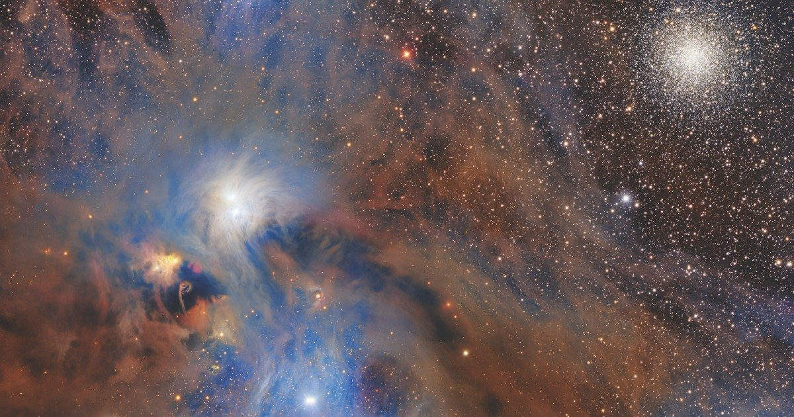

Молодое облако и старое скопление у Южной Короны
На снимке в районе созвездия Южная Корона запечатлено редкое соседство: плотное молекулярное облако, где прямо сейчас рождаются звезды, и древнее шаровое скопление, чьи светила старше Солнечной системы. Этот контраст позволяет астрономам изучить полный цикл звездной эволюции в одном поле зрения.
Звездный питомник на границе созвездия
На северной окраине созвездия Южная Корона скрывается один из ближайших к Земле регионов активного звездообразования — молекулярное облако Южной Короны. На снимках оно проявляется как сложная паутина светящегося газа и плотных пылевых полос, поглощающих свет фоновых звезд. Это массивное накопление холодного вещества служит строительным материалом для будущих светил, причем его масса достаточно для рождения тысяч новых звезд. Расстояние до этого питомника составляет всего около 430 световых лет, что по космическим меркам делает его практически соседом нашей Солнечной системы.
Плотность пыли в центральных частях облака настолько велика, что оптический свет молодых звезд, только начинающих свою жизнь, не пробивается сквозь эту завесу. Астрономы наблюдают за процессами рождения светил в инфракрасном и радиодиапазонах, где пыль становится прозрачной для излучения. На видимом же снимке структура облака напоминает темные реки, текущие на фоне слабого свечения ионизированного газа, что создает драматичный контраст между светом и тьной в глубине космоса и раскрывает динамику межзвездной среды.

Переменная звезда и отражательные туманности
Среди скрытых недрами облака звезд выделяется переменная R Южной Короны — молодая звезда, которая уже смогла пробить окружающую оболочку и стать заметной в оптическом диапазоне. Она расположена в оранжевом облаке к юго-западу от яркой эмиссионной туманности, доминирующей слева от центра кадра. Ее свет рассеивается на частицах пыли, окрашивая окружение в теплые тона, что позволяет проследить форму и плотность ближайших к звезде слоев материи и оценить скорость звездного ветра.
Кроме яркой эмиссионной области, кадр украшают несколько голубоватых отражательных туманностей. В отличие от эмиссионных, они не светят сами, а лишь отражают свет ближайших горячих звезд, рассеиваясь на мелкодисперсной пыли. Их природа подсказывает астрономам о составе и размере пылевых частиц, а также о геометрии магнитных полей, пронизывающих облако. Совокупность этих объектов создает уникальную панораму взаимодействия молодых звезд и окружающей межзвездной среды на ранних стадиях эволюции.

Соседство с древним Наголочным кластером
В правом верхнем углу того же кадра обнаруживается совершенно иной по природе объект — шаровое скопление NGC 6723, известное также как Наголочный кластер. Если молекулярное облако — это колыбель для новых звезд, то это скопление представляет собой древнюю семью из сотен тысяч старых светил, сжатых гравитацией в плотный шар диаметром в десятки световых лет. Возраст его звезд исчисляется миллиардами лет, и они практически не содержат тяжелых элементов, характерных для более молодых поколений светил.
Расстояние до NGC 6723 составляет примерно 28 000 световых лет, что в десятки раз больше удаленности молекулярного облака. Визуальная близость на небосводе обманчива: это эффект проекции, когда объекты, разделенные огромными промежутками пространства, попадают на одну линию взгляда. Скопление находится в далеких окраинах Стрельца, в галактическом ореоле, в то время как облако Южной Короны лежит в диске Млечного Пути, что подчеркивает их принципиально разную принадлежность и историю формирования.
Что дает совместное наблюдение регионов
Наличие в одном поле зрения объекта, где звезды только зачинаются, и системы, где они живут миллиарды лет, создает уникальную натуральную лабораторию для астрофизики. Астрономы могут сравнивать химический состав, кинематику и физические условия в средах, разделенных колоссальным временным интервалом, не переключая телескоп и используя одни и те же инструментальные настройки. Такие совпадения проекции редки и ценны для проверки моделей эволюции вещества в Галактике и калибровки расстояний.
Контраст между холодной пылевой тьмой питомника и густым сиянием тысяч старых звезд скопления наглядно демонстрирует цикличность космической материи. Вещество, из которого сформировались звезды NGC 6723, когда-то само лежало в подобных темных облаках, а продукты термоядерного горения тех древних светил обогатили галактический диск элементами, из которых сейчас рождаются новые звезды в облаке Южной Короны, замыкая круг вещества в природе.
Коротко: В одном поле зрения у Южной Короны запечатлены активный звездный питомник в 430 световых годах и древнее шаровое скопление в 28 000 световых лет. Их проекционное соседство наглядно показывает полный цикл звездной эволюции — от рождения в холодных пылевых облаках до миллиардолетнего старения в густых шаровых системах.
Какой космический объект вас больше впечатляет: место рождения новых звезд или древнее скопление, где они стареют миллиарды лет?